Лист моделей
Здесь можно рассмотреть предметы «Белой Совы» по отдельности и открыть их в контрольной точке реальной трассы. Размер кадра — 375×667, расстояние до выставленного объекта — 8 м; это сравнение видимости, а не схема спавна. У объектов из кода указано, какие детали можно перенести в Blender или Tripo.
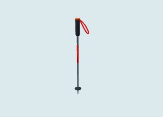
Лыжная палка
Часть модели Мишани: рукоятка находится в закрытой перчатке в меню и на спуске.
Оранжевый колпачок виден над хватом, древко выходит снизу. Сохранять этот контраст со снегом.
На трассе · 375×667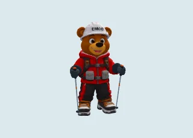
Мишаня
Лыжник. Модель меню и запечённая анимация спуска.
Проверять крупным планом: оранжевый колпачок над пальцами, древко ниже ладони. В стойке обе руки вынесены вперёд.
На трассе · 375×667 · Меню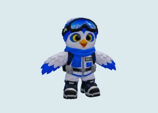
Белая Сова
Сноубордистка. Модель меню и запечённая анимация спуска.
Тёмный шлем и холодная тень отделяют белую голову от снега. Следующим проходом усилить разницу силуэтов двух кантов.
На трассе · 375×667 · Меню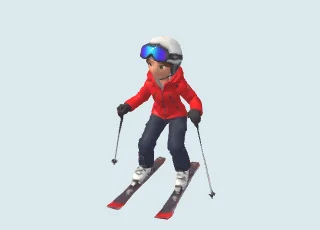
Лыжник
Участник движения и инструктор лыжной группы.
Выделить плечи одним пятном и сделать палки темнее снега.
На трассе · 375×667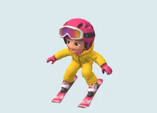
Ребёнок на лыжах
Едет следом за инструктором.
Сохранить низкий рост, дать шлему единый яркий цвет для чтения издалека.
На трассе · 375×667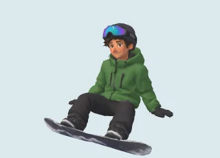
Сидящий лыжник
Встречается у края и в эпизоде с аптечкой.
Подчеркнуть тёмной полосой нижний край куртки: сидячая фигура низко над снегом.
На трассе · 375×667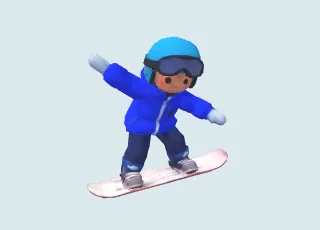
Юный сноубордист
Участник группы на досках.
Развести руки и корпус в профиль; окрасить нос доски.
На трассе · 375×667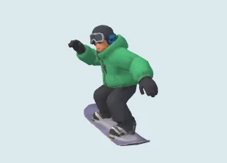
Взрослый сноубордист
Попутчик на трассе.
Укрупнить контрастные перчатки: из-за спины райдер похож на лыжника.
На трассе · 375×667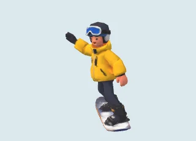
Инструктор на доске
Ведёт группу. Цвета курток меняются кодом.
Постоянная яркая спинка отличит ведущего от группы при смене вариантов куртки.
На трассе · 375×667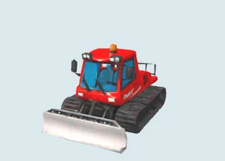
Ратрак
Едет попутно или навстречу.
Оставить широкий отвал; подчеркнуть полосой его опасные углы.
На трассе · 375×667
Лесной патруль
Снегоход с водителем, занимает одну полосу.
Отделить тёмную гусеницу от костюма водителя; яркую фару сохранить.
На трассе · 375×667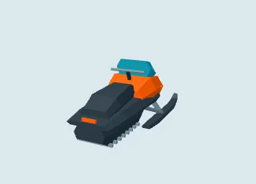
Снегоход игрока
Отдельный кузов. За рулём выбранный герой.
Отличить нос снегохода игрока от патрульного по окраске капота.
На трассе · 375×667
Кресло подъёмника
Движется по тросу.
Утолстить силуэт сиденья, оставить открытым просвет под подвесом.
На трассе · 375×667
Опора подъёмника
К опорам привязана линия троса.
Оставить тёмный контур опоры, добавить цвет у основания на высоте игрока.
На трассе · 375×667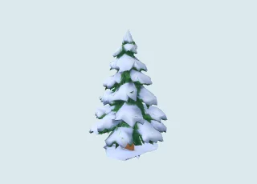
Заснеженная ель
Первый вид леса.
Разделить белые ярусы более тёмными промежутками.
На трассе · 375×667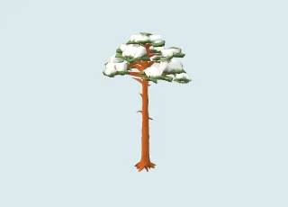
Высокая сосна
Формирует внешний край лесной тропы.
Высокий силуэт работает по краю дороги; не увеличивать ширину ветвей.
На трассе · 375×667
Молодая ель
Более низкое дерево на проходах.
Сохранить просветы между ветвями; на солнце затемнить нижнюю хвою.
На трассе · 375×667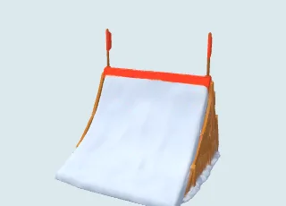
Обычный трамплин
Импортированная модель на обычных трассах.
Обозначить нос и линию отрыва одним контрастным цветом.
На трассе · 375×667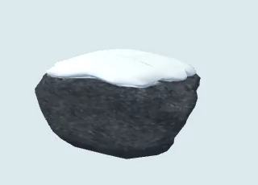
Широкий валун
Препятствие с низким силуэтом.
Низкий край почти теряется: затемнить боковую грань под снежной шапкой.
На трассе · 375×667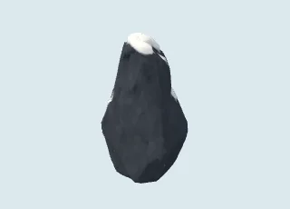
Высокий валун
Второй вариант камня.
Сильный вертикальный контур; усилить переход от шапки к камню.
На трассе · 375×667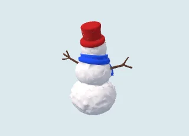
Снеговик
Бросает снежки. В бонусе его можно сбить.
Шарф и шляпа помогают распознаванию; сделать жест броска крупнее.
На трассе · 375×667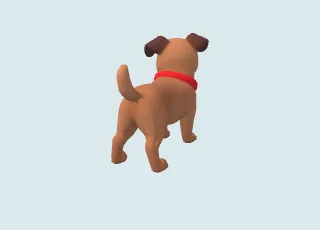
Горная собака
Перебегает трассу.
Дать движение хвосту: направление перебежки должно читаться сбоку.
На трассе · 375×667
Йети
На буграх пересекает следы перед игроком. На вершине и ночью машет у края.
Затемнить кончики лап; расширить первый шаг перед пересечением следов.
На трассе · 375×667
Снежная пушка
Препятствие с выбросом снега.
Разнести по тону ствол и основание; оставить тёмное отверстие сопла.
На трассе · 375×667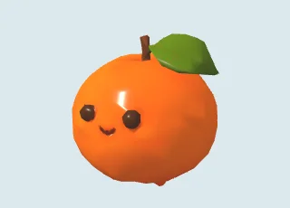
Мандаринка
Валюта. В бонусе участвует в серии.
Сохранить цельное оранжевое пятно, укрупнить зелёный лист.
На трассе · 375×667
Кофе
Ускоряет героя.
Яркая кружка читается по цвету; расширить просвет ручки.
На трассе · 375×667
Каска
Дополнительная жизнь.
Добавить контрастную полосу вдоль шлема, чтобы отличать его от валюты.
На трассе · 375×667
Подарок
Особенно ценен в заезде на снегоходе.
Сделать бант шире: мелкие ленты теряются на дистанции.
На трассе · 375×667
Магнит
Притягивает мандаринки.
Подчеркнуть светлые наконечники и открытый промежуток между ними.
На трассе · 375×667
Аптечка патруля
Белый кейс из Tripo Studio. Подбор у упавшего открывает правило FIS №9.
Белый кейс на снегу нуждается в более широкой цветной полосе по торцу.
На трассе · 375×667
Золотое перо
Гранёная модель 36B на высокой линии сноупарка. Два завершённых трюка и контакт открывают бонусные заезды.
Три тона золота отделяют стержень от гранёных бородок; тёплый контур виден над снегом.
На трассе · 375×667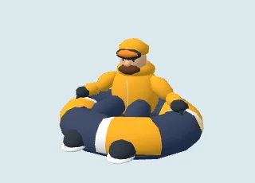
Плюшка · янтарная
Ездок на учебном склоне. Движется с обочины к середине, оставляя проезд с другой стороны.
Борода и тёплая куртка выделяют лицо.
На трассе · 375×667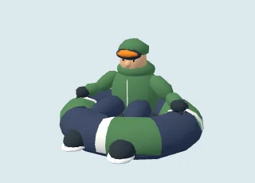
Плюшка · хвойная
Ездок на учебном склоне. Движется с обочины к середине, оставляя проезд с другой стороны.
Тёмная кромка отделяет зелёную плюшку от снега.
На трассе · 375×667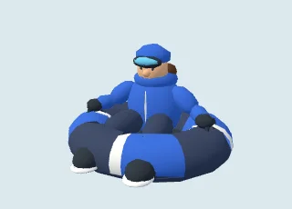
Плюшка · синяя
Ездок на учебном склоне. Движется с обочины к середине, оставляя проезд с другой стороны.
Синий костюм и хвост видны в профиль.
На трассе · 375×667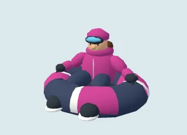
Плюшка · малиновая
Ездок на учебном склоне. Движется с обочины к середине, оставляя проезд с другой стороны.
Малиновый костюм выделяется на фоне хвои.
На трассе · 375×667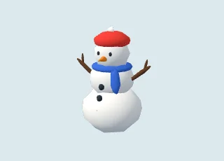
Снеговик в шапке
Стоит на учебном склоне. На этой трассе встречаются все три варианта.
Красная шапка и синий шарф читаются издали.
На трассе · 375×667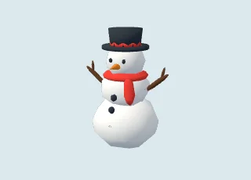
Снеговик в цилиндре
Стоит на учебном склоне. На этой трассе встречаются все три варианта.
Высокий тёмный цилиндр обозначает силуэт.
На трассе · 375×667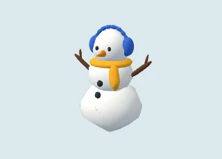
Снеговик в наушниках
Стоит на учебном склоне. На этой трассе встречаются все три варианта.
Синие наушники и жёлтый шарф выделяют голову и шею.
На трассе · 375×667
Красные ворота
Стойки и флаги можно заменить модульной моделью. Ореол и ширина прохода меняются в игре.

Синие ворота
Вторая расцветка слаломной пары.

Воздушное кольцо
Кандидат для резного обода с фасками. Свечение и диаметр зависят от прыжка.

Указатель леса
Кандидат для деревянной рамы со снежной шапкой. Надпись и стрелка меняются.
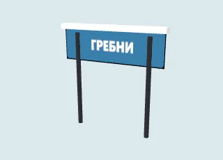
Указатель бугров
Общая модель рамы пригодится для разных этапов.
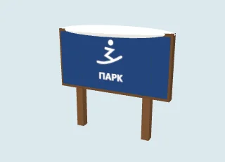
Указатель парка
Высокий вариант указателя.

Бокс
Можно моделировать боковины. Верх совпадает с игровой поверхностью.
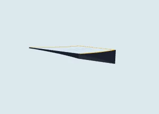
Трамплин сноупарка
Три высоты. Для замены подойдут накладки на борта, профиль отрыва задаёт физика.
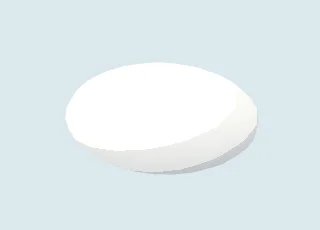
Отдельный бугор
Сугроб, который Мишаня может снести.
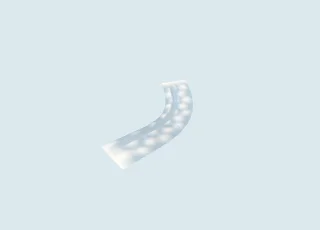
Поле гребней
Непрерывный рельеф совпадает с поверхностью столкновения.
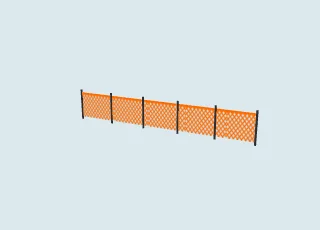
Защитная сетка
Кандидат для стоек и креплений. Длина барьера переменная.
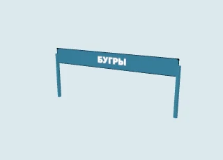
Арка этапа
Кандидат для фирменной деревянной арки. Название зависит от этапа.

Финиш
Хороший кандидат для праздничной финишной конструкции.
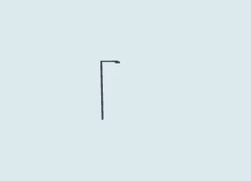
Фонарь
Повторяемый объект. Один недорогой GLB может заменить всю серию.
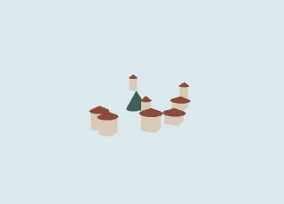
Дальний посёлок
Кандидат для набора из нескольких сахалинских домиков.
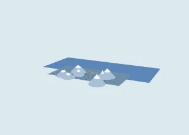
Горы и долина
Дальний план. Важны крупные силуэты и низкая стоимость отрисовки.

Полотно трассы
Изгибы, уклон и борта повторяют физическую трассу.

Северное сияние
Полупрозрачная рисованная текстура на плоскости.

Следы лыж
Повторяющиеся отпечатки на снегу.

Следы йети
Предупреждают, с какой стороны выйдет йети.

Трос подъёмника
Соединяет соседние опоры точно по высоте.
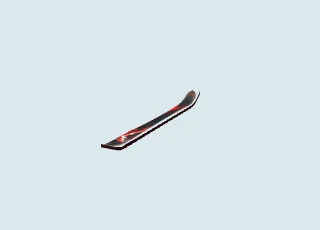
Лыжа
Геометрия меню и запасной позы. В запечённом движении используется снаряжение Blender.
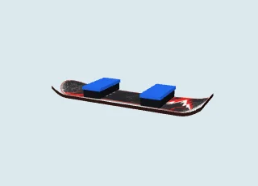
Сноуборд
Доска для меню и запасной позы.
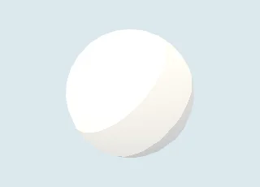
Снежок
Снаряд снеговика.
Коллекционная буква
Динамическая буква из собираемого слова.
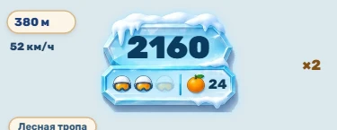
Счёт, каски и мандарины
Плоские значки и табло интерфейса для чтения на телефоне.
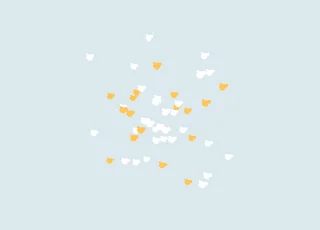
Снежные частицы
Снегопад, брызги и салюты используют частицы.